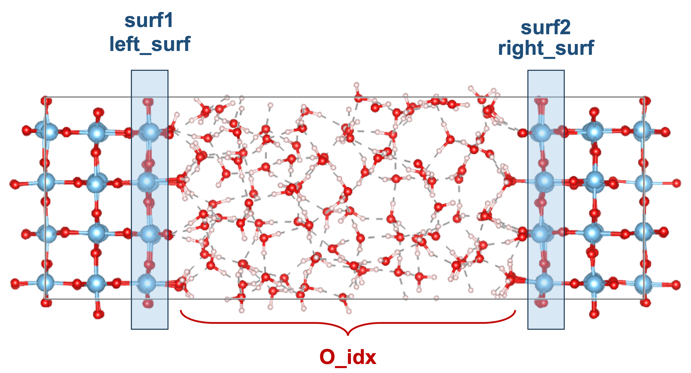
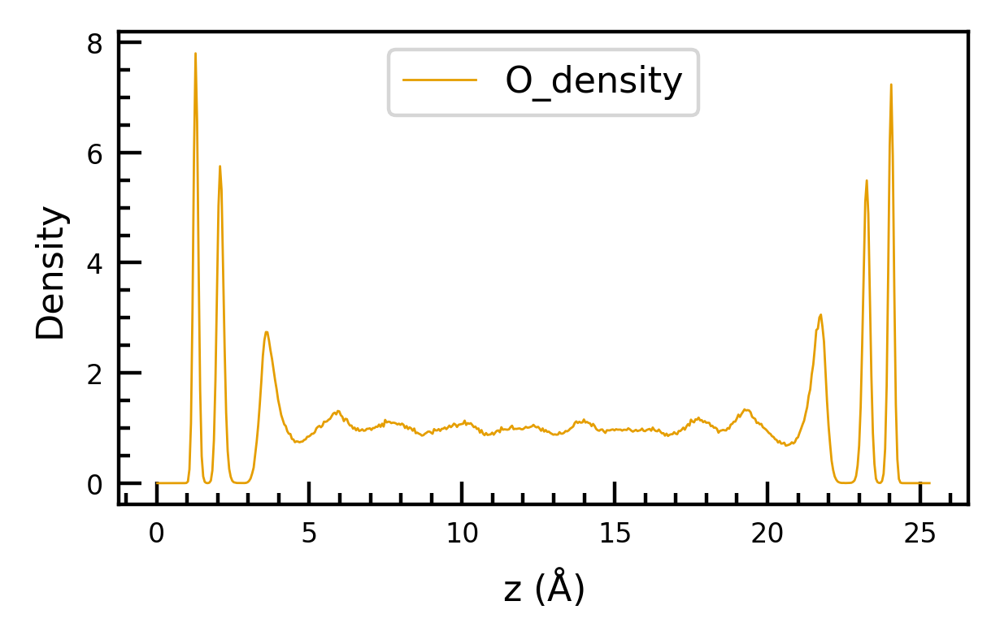

Atom density analysis#
Introduction#
Density analysis along the normal to an interface is very helpful for understanding the interface structure.[Andrade et al., 2020, Fan et al., 2023, Guo et al., 2018, Le et al., 2017, Wen et al., 2023] The density can be obtained using the AtomDensity class.
The following gives the introduction of the parameters used in the inp_dict, which is the input dictionary of the AtomDensity class.
First, we need to define the locations of the interfaces using the surface atom indices.
These indices can be readily found using the class Slab.
Note that the Slab class is inherent from Atoms class in ase.
In this way, we can either use the methods built in the Atoms class or the new methods created in ECToolkits
To initialize the Slab class, we can simply use Slab class in the Atoms object.
For example, you can substantialize a Atoms object by ase.io.read
from ase.io import read
stc = read("rutile-interface.cif")
Then, you can pass the Atoms object stc to the Slab class method.
from ectoolkits.structures.slab import Slab
stc = Slab(stc)
Once you create the Slab object, Slab object can use find_idx_from_range method to find the indices of atoms.
If the z coordinates of surface atoms are located in the range from 6.2 Angstrom to 7.2 Angstrom,
we can obtain the indices using the following codes,
surf1_idx = stc.find_idx_from_range(zmin=6.2, zmax=7.2, element='Sn')
Here, the zmin and zmax define the lower and upper bounds of z coordinates.
The spcification of element is optional. If you don’t define the element, the indices of all atoms located within this range will be retrevied. Note that, currently, this method only applys to the z coordinates.
Now you need to define the surf1 and surf2.
The reason two interfaces exist is that the model is symmetric with respect to the slab’s center plane, as shown in the following figure.
surf1represents the interface on the left, where the solid is to the left of the liquid.surf2represents the interface on the left, where the solid is to the left of the liquid. 
Note that it is unnecessary to post-process your trajectories by positioning the water phase in the center of the box as shown in the figure.
Next, we move to the analysis of water density at interfaces.
To perform the water density analysis, the indices of oxygen atoms between two interfaces are need to be specified, as shown in the O_idx of the above figure. Again, you can find the indices using the method find_idx_from_range, and put these indices (List) in the inp_dict["density_type"]["idx_list"]. Here, the density_unit should be set to "water" because the coordinates of oxygen atoms are treated as the positions of water molecules and are converted to water density through unit conversion.
Usage#
Now, we import the analysis class AtomDensity and gather the following mentioned parameters.
from ectoolkits.analysis.atom_density import AtomDensity
# from
inp_dict={
"xyz_file": "./Hematite-pos-1.xyz", # the path to the xyz trajecotry.
"cell": [10.0564, 8.7091, 38.506, 90, 90, 90], # the cell parameters
"surf2": [32, 33, 34, 35, 36, 37, 38, 39, 40, 41, 42, 43], # the interface on the right
"surf1": [112, 113, 114, 115, 116, 117, 118, 119, 120, 121, 122, 12], # the interface on the left
"density_type":[
{
"element": "O",
"idx_method": "manual",
"idx_list": O_idx,
"density_unit": "water",
"dz": 0.05,
"name": "O_density"
},
{
"element": "H",
"idx_method": "manual",
"idx_list": H_idx,
"density_unit": "water",
"dz": 0.05,
"name": "H_density"
}
]
}
ad = AtomDensity(inp_dict)
ad.run()
# detail information is accessible in
ad.atom_density
ad.atom_density_z
# get average denstiy from center
width_list = [5, 6, 7, 8, 9, 10]
all_cent_density = ad.get_ave_density(width_list)
# quick plot for denstiy
# if you want to symmetrize the density profile, set sym=True
ad.plot_density(sym=False)
